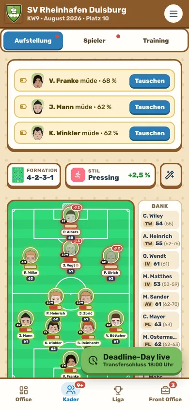
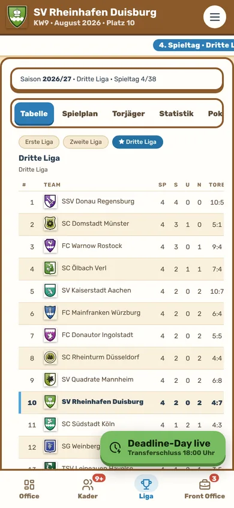
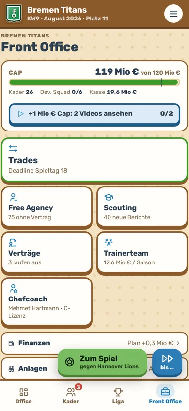
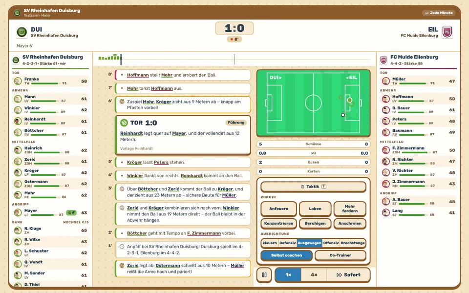

Unter Flutlicht
Ein Fußball-Manager. Zwei Spielarten.
Führ deinen Verein von der Dritten Liga in den Europapokal – oder bau in Kickdraft deine Franchise über Draft, Salary Cap und Playoffs. Beides steckt in einem Spiel, und die Demo läuft direkt hier im Browser.
- Kostenlos
- Ohne Konto
- Ohne Werbung
- Handy und PC
Vereinskarriere
Auf- und Abstieg, Pokal und Europapokal. Verträge, Ausbau, Akademie – und ein Vorstand, der dich misst.
Mehr erfahren → Spielart 2Kickdraft
32 Franchises, kein Abstieg, harter Salary Cap. Talente nur über den Draft, am Ende Playoffs um den Titel.
Mehr erfahren →Spielart 1
Vereinskarriere
Der klassische Manager mit Auf- und Abstieg. Übernimm einen Verein aus der Ersten, Zweiten oder Dritten Liga, verhandle Verträge, bau Stadion und Akademie aus und kämpf dich hoch – bis in den Europapokal.
Auf- und Abstieg
Vom Abstiegskampf bis zur Meisterschaft – jede Saison zählt.
Spieltag im Ticker
Derbys, Pokal und Finale mit eigener Stimmung, Zurufe von der Seitenlinie.
Eine lebende Liga
Die anderen Vereine kaufen, verkaufen und bauen aus – mit guten und schlechten Transfers.


Spielart 2
Kickdraft
Fußball mit den Regeln der großen US-Ligen: 32 Franchises, kein Abstieg, ein harter Salary Cap, Talente nur über den Draft und am Ende Playoffs um die Meisterschaft.
Franchises, kein Abstieg
Zwei Conferences, acht Divisions. Jeder kann jedes Jahr oben angreifen.
Harter Salary Cap
Verträge, Handgeld und Dead Cap. Wer zu viel ausgibt, zahlt Jahre später dafür.
Draft statt Nachwuchs
Die Schwächsten wählen zuerst, Picks lassen sich tauschen.
Playoffs
Division-Sieger und Wildcards spielen um den Titel.




Am großen Bildschirm
Am Handy oder am PC
Die Demo passt sich an. Am Handy spielst du wie in der App, am PC mit eigener Bedienung: Navigation links, Tabellen statt Listen, Tastenkürzel – und am Spieltag coachst du live mit Zurufen, Ausrichtung und Wechseln.

Im Browser
Beide Spielarten als Demo. Dein Spielstand bleibt in deinem Browser.
Android-App
Das ganze Spiel, kostenlos bei Google Play. Läuft auch ohne Internet.
PC-Version
Für Windows mit PC-Bedienung und Streamer-Modus – zuerst bei itch.io, später bei Steam.
Anpfiff in Sekunden
Kein Download, kein Konto. Wähl deinen Verein und leg los.